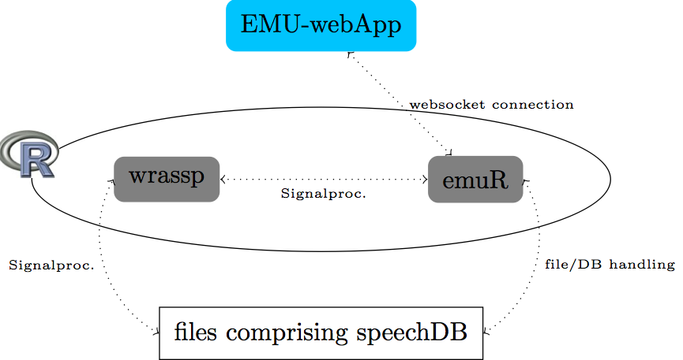

Due to several maintainability and other issues of the old EMU system, we have made the decision to reimplement the EMU speechdatabase management system basically from scratch. In doing so we are trying to keep most of the concepts of the old system in place while improving on things like usability, maintainability, scalability, stability, speed and more.
The core of the new system will be based in the R language for statistical computing. Two R packages (the gray items in the Figure below) are currently being developed that will form the core of the new system, one being the wrassp package to handle the speech signal processing and the other handling database manipulation and querying as well as serving as a local websocket server to connect to the EMU-webApp. This infrastructure will allow researchers to have a self-contained system to query databases, perform signal processing and perform statistical evaluations all within the same environment. Being autonomous, however wrassp and the web application will also be able to be used separately if desired.
The EMU-webApp is an online and offline web application for labeling, visualizing and correcting speech and derived speech data. A screenshot of the web application can be seen below.

The EMU-rPackage is an R package that aims at providing speech signal segment extraction functionality for several speech annotation file formats (including oldEmuDBFormat/TextGrids/...) and their corresponding audio/derived-audio files. It aims at assisting a workflow, common in phonetic science/speech science, wherein certain speech-audio and annotation file collection are queried for specific time-based segments. The retrieved segment-lists can then be used to extract either precalculated derived signals or calculate these on the fly. Furthermore the package wants to be as easily expandable to new label file formats as possible (see Extendability section of this document).
Wrassp is an R package that functions as a wrapper to Michel Scheffer's libassp (Advanced Speech Signal Processor). The libassp library aims at providing functionality for handling speech signal files in most common audio formats and for performing analyses common in phonetic science/speech science. This includes the calculation of formants, fundamental frequency, root mean square, auto correlation, a variety of spectral analyses, zero crossing rate, filtering etc. This wrapper library for R exposes a large subset of the signal processing functions to R in a (hopefully) user friendly manor.
The short answer is YES! We will provide methods for converting existing EMU databases to the new database format.
As with the old EMU databases we will provide methods for converting .TextGrid and .wav files collections to the new database format.
Currently the new system as a hole only supports .wav files. The wrassp package however supports a wide range of audio files.
As this is one of the most beneficial and powerful features of the old EMU system the new system will most definitely also implement these features.
Although not fully decided yet, the most likely candidate for our annotation file format will be the JSON file format that uses links to connect annotational units (called elements) that are grouped in tier arrays.